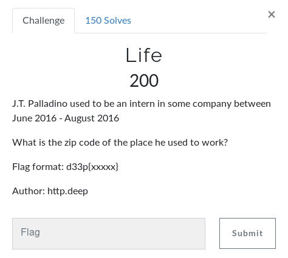

Life
J.T. Palladino to be an intern in some company between June 2016 - August 2016
Lets hope into linkedin...
It seems between June 2016 - Aug 2016... He was in a company names Data Quality Intern
in Raritan, New Jersey...
Lets search for its postal code online...
So the anser is...
08869
flag: d33p{08869}